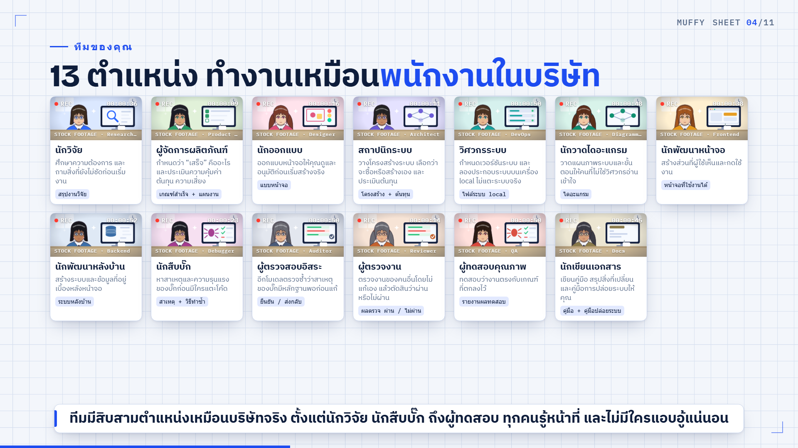
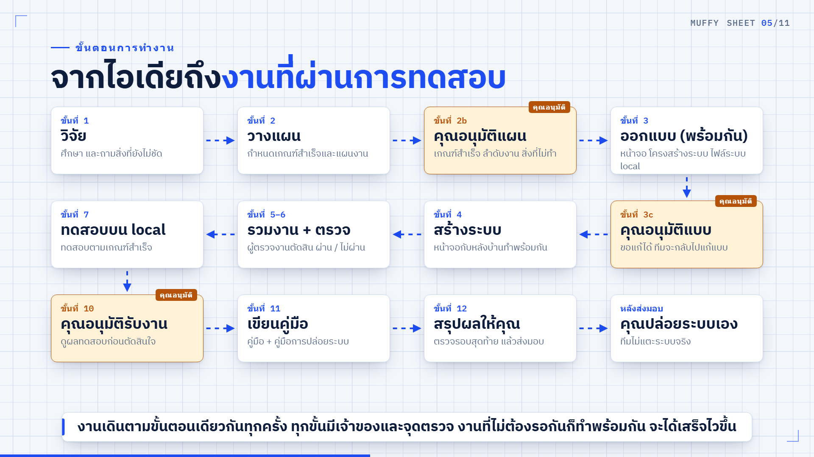

ไม่มีใครถามก่อน เลยต้องรื้อทำใหม่
สรุปสั้นๆ ที่คนถัดไปเข้าใจผิด
แก้วนไปเรื่อยๆ จนกว่าคนจะสั่งหยุด


เกณฑ์ว่า “เสร็จ” คืออะไร ก่อนเริ่มออกแบบ
ยังไม่มีใครเขียนโค้ดจนกว่าคุณจะอนุมัติ
ดูผลทดสอบต่อหน้า แล้วค่อยรับงาน
/plugin install muffy@muffy